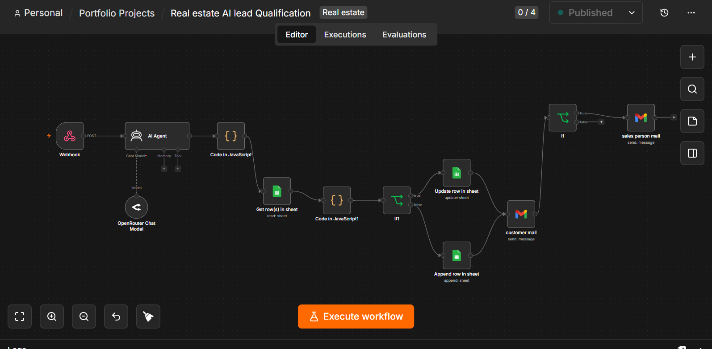

01
AI AUTOMATION · LEAD QUALIFICATION · CRM WORKFLOW
AI Real Estate Automation
An n8n workflow that turns property inquiries into a structured lead-handling process.
THE PROBLEM
Real estate teams can spend substantial time checking inquiries, reviewing lead information, deciding next steps, preparing emails, notifying salespeople and updating records. That can create missed leads, inconsistent classification and delayed follow-up.
THE SOLUTION
A property inquiry enters through a webhook, is assessed by AI against defined instructions and business rules, and drives the appropriate workflow actions. The AI provides structured lead assessment rather than claiming perfect decisions.

TECHNOLOGY
BUSINESS BENEFITS
- Reduces manual lead review
- Speeds up initial processing
- Helps keep classification consistent
- Helps prevent missed follow-ups